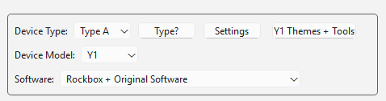
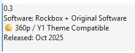

Rockbox · Innioasis Y1
Installeer Rockbox op uw Y1.
Dit is de Y1-versie van de begeleide Updater-route. Het houdt de taal dicht bij de app.
Installatiehandleiding voor uw computer
Installeer Rockbox op uw Y1 met uw computer
Kies de handleiding voor de computer die u gebruikt. Elke versie heeft de platformconfiguratie, Updater CE stappen en de weg terug naar de voorraad.
Wat je nodig hebt
Een Innioasis Y1, een opgeladen batterij, een USB datakabel en een computer waarop Innioasis Updater CE is geïnstalleerd (als je dit nog niet hebt geïnstalleerd, Updater CE downloaden voor Windows, macOS of Linux). Type A is geschikt voor Y1 spelers die zijn geleverd met originele softwareversie 2.0.0 of hoger; Type B is geschikt voor spelers die met een eerdere versie van de Originele software. Start with Type A unless you already know your player needs a Type B build.
Bekijk de Rockbox route
In Updater
- Open Updater CE (of start met Ontvang dit in Updater CE) en ingesteld Apparaatmodel aan Y1.
- Kies Rockbox binnen Software. The exact project label may appear as Rockbox-Y1 in release data.
- Kies een stabiele release. 240p-builds hebben de breedste compatibiliteit met oudere thema's; 360p-builds zijn bedoeld voor het themapad Y1. Controleer de release-opmerkingen als het onderscheid ertoe doet.
- Klik Installeren / Herstellen. Wacht terwijl Updater CE het pakket rechtstreeks uit de release van de communityontwikkelaar downloadt en voorbereidt.


Sluit de Y1 aan
- Wacht tot Updater om de speler vraagt.
- Schakel de Y1 volledig uit. Als het niet wordt afgesloten, gebruikt u de herstelinstructie die door Updater wordt weergegeven.
- Sluit de USB-datakabel alleen aan als de app dit zegt. Zet de speler neer en verstoor de verbinding niet.
- Verbreek de verbinding pas nadat Updater het succes heeft bevestigd en start vervolgens Y1.

Keer terug naar de originele software
Rockbox houdt u niet vast aan de aangepaste software. Zodra Updater voor uw computer is ingesteld, kunt u deze gebruiken op Windows, macOS of Linux: selecteer Y1, kiezen Originele software, en rennen Installeren / Herstellen.
- Wacht tot Updater klaar is met het voorbereiden van het voorraadpakket.
- Schakel de Y1 uit wanneer de app daarom vraagt.
- Sluit de USB-datakabel alleen aan als er live om gevraagd wordt.
- Laat de speler stil staan tot het succesbericht verschijnt.
Gebruik het pakket Y2 niet en verwijder de bestanden Rockbox niet handmatig vóór het herstel. Controleer voor Type B wielgedrag de overeenkomende ontgrendelingsvariant voordat u het apparaattype wijzigt.
Meer Rockbox-Y1 handleidingen
Ontdek meer handleidingen voor installeren, downloaden, thema's toevoegen, herstellen en probleemoplossing Rockbox-Y1: